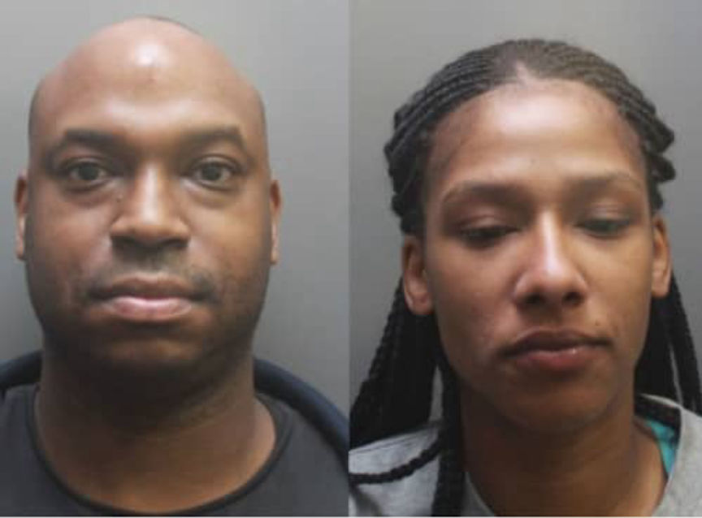
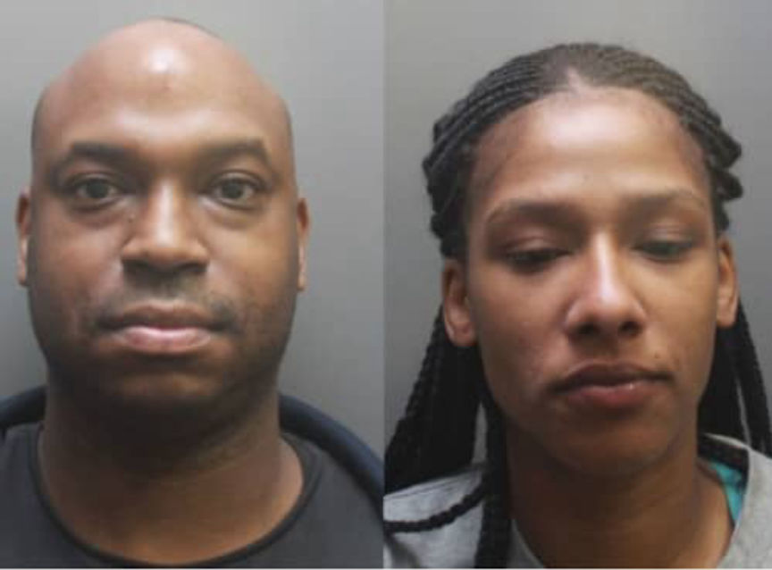

Two Sentenced to Prison for Liverpool Darkweb Drug Operation
~3 min read | Published on 2019-12-07, tagged Darkweb-Vendor, Drug-Bust, Drugs, Sentenced using 647 words.
Two were sentenced prison for running a “major darkweb dug operation” out of their Liverpool home. According to evidence revealed in court, the duo shipped hundreds of thousands of pounds worth of methamphetamine, MDMA, ketamine, and cocaine to customers across the globe.
Officers with the North West Regional Organized Crime Unit raided the Toxteth home of Anthony Reid and his partner Zadia Salami in March 2019. Border Force officers at a Parcelforce hub in Coventry had intercepted a package of £120,000 worth of methamphetamine headed to the Toxteth address. Reid, the so-called “orchestrator of the operation,” had used Salami’s house as a hub for receiving packages of drugs for months, prosecutor Andrew Ford said in court.
Zadia Salami’s Sentencing
Before using Salami’s house as a base of operations, Reid had used the houses of several other girlfriends. His other girlfriends admitted receiving packages for Reid but denied playing any other role in his operation. Salami, although she had entered a not guilty plea, was found guilty of conspiring to distribute Class A and Class B drugs after a jury trial. She had argued that the help she had only helped Reid after suffering domestic abuse at his hands. The prosecutor, jurors, and judge all disagreed with her claims and acknowledged that she had played a different role than Reid’s other girlfriends.
Part of her involvement was based on her actions during the police raid at her house; she knew the combination of a safe containing more than three kilograms of methamphetamine. Judge Brian Cummings sentenced Salami to three years in prison. In response to the defense that her vulnerability allowed Reid to manipulate her into helping with the operation, Judge Cummings said, “I saw little evidence of this at your trial. You allowed a drug dealer to carry out drugs transactions at the home of you and your son.”
Anthony Reid’s Sentencing
Ford, prosecuting, said that Reid “used the internet, specifically the dark web to trade drugs of Class A and Class B. These were paid for in the cryptocurrency bitcoin and there were two email addresses which could be used to trade in the currency. His supply network allowed for an expansive and nationwide trade in these substances. He stood at the heart of the importations.”
Border Force had intercepted several packages addressed to Reid’s other girlfriends in 2018. The seized packages usually contained one or more kilograms of methamphetamine. Reid sold an assortment of drugs to users “across the country, including Scotland,” the prosecutor told the court. During the raid, law enforcement seized £7,500 worth of cannabis; more than two kilograms of MDMA powder; one kilogram of ecstasy tablets; three kilograms of methamphetamine; cocaine; and ketamine. Reid had also stored label printers, packaging material, various cutting agents, and plastic bags at Salami’s house.
Investigators recovered information from Reid’s computer that detailed his operation as well as incriminated customers in several countries. Labels found in Reid’s Audi revealed that at least two of his girlfriends had received packages at Reid’s request. A jury cleared both of any wrongdoing. Reid admitted running the operation. He pleaded guilty to one count of conspiring to smuggle Class A drugs and two counts of conspiring to supply Class A and Class B drugs.
Judge Cummings sentenced Reid to 12 years in prison. He said the following to Reid during the sentencing hearing:
You are a man of intelligence and ability and you chose to devote those attributes to crime. You used Salami’s home as centre of the operation, storing during there and using the premises for the preparation and distribution of drug deals of various weights and value to various customers. You used the darkweb and cryptocurrency as an untraceable way of handing the financial side of the business.
Reid had previous convictions for distributing heroin and cocaine. He apologized at sentencing for the collateral damage caused by his actions.
Officers with the North West Regional Organized Crime Unit raided the Toxteth home of Anthony Reid and his partner Zadia Salami in March 2019. Border Force officers at a Parcelforce hub in Coventry had intercepted a package of £120,000 worth of methamphetamine headed to the Toxteth address. Reid, the so-called “orchestrator of the operation,” had used Salami’s house as a hub for receiving packages of drugs for months, prosecutor Andrew Ford said in court.
Reid and Salami in their March 2019 Mugshots | Echo
Zadia Salami’s Sentencing
Before using Salami’s house as a base of operations, Reid had used the houses of several other girlfriends. His other girlfriends admitted receiving packages for Reid but denied playing any other role in his operation. Salami, although she had entered a not guilty plea, was found guilty of conspiring to distribute Class A and Class B drugs after a jury trial. She had argued that the help she had only helped Reid after suffering domestic abuse at his hands. The prosecutor, jurors, and judge all disagreed with her claims and acknowledged that she had played a different role than Reid’s other girlfriends.
Part of her involvement was based on her actions during the police raid at her house; she knew the combination of a safe containing more than three kilograms of methamphetamine. Judge Brian Cummings sentenced Salami to three years in prison. In response to the defense that her vulnerability allowed Reid to manipulate her into helping with the operation, Judge Cummings said, “I saw little evidence of this at your trial. You allowed a drug dealer to carry out drugs transactions at the home of you and your son.”
Anthony Reid’s Sentencing
Ford, prosecuting, said that Reid “used the internet, specifically the dark web to trade drugs of Class A and Class B. These were paid for in the cryptocurrency bitcoin and there were two email addresses which could be used to trade in the currency. His supply network allowed for an expansive and nationwide trade in these substances. He stood at the heart of the importations.”
Border Force had intercepted several packages addressed to Reid’s other girlfriends in 2018. The seized packages usually contained one or more kilograms of methamphetamine. Reid sold an assortment of drugs to users “across the country, including Scotland,” the prosecutor told the court. During the raid, law enforcement seized £7,500 worth of cannabis; more than two kilograms of MDMA powder; one kilogram of ecstasy tablets; three kilograms of methamphetamine; cocaine; and ketamine. Reid had also stored label printers, packaging material, various cutting agents, and plastic bags at Salami’s house.
Investigators recovered information from Reid’s computer that detailed his operation as well as incriminated customers in several countries. Labels found in Reid’s Audi revealed that at least two of his girlfriends had received packages at Reid’s request. A jury cleared both of any wrongdoing. Reid admitted running the operation. He pleaded guilty to one count of conspiring to smuggle Class A drugs and two counts of conspiring to supply Class A and Class B drugs.
Judge Cummings sentenced Reid to 12 years in prison. He said the following to Reid during the sentencing hearing:
You are a man of intelligence and ability and you chose to devote those attributes to crime. You used Salami’s home as centre of the operation, storing during there and using the premises for the preparation and distribution of drug deals of various weights and value to various customers. You used the darkweb and cryptocurrency as an untraceable way of handing the financial side of the business.
Reid had previous convictions for distributing heroin and cocaine. He apologized at sentencing for the collateral damage caused by his actions.